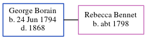

George Borain 1794 - 1868
[ Home ] | [ Calendar ] | [ Surnames Index ] | [ Errors ] | [ Family History ]George Borain, the husband of Rebecca Bennet (the four times great-aunt of Nigel Horne), was born in Wickhambreaux, Kent, England on 24 Jun 1794. He married Rebecca in Wickhambreaux on 27 Apr 18181. In 1818, he was living in Canterbury, Kent, England2.
He died in 1868 in Pietermaritzburg, KwaZulu-Natal, South Africa.
Citations
- England, Select Marriages, 1538–1973 Ancestry.com Operations, Inc.
- UK, Poll Books and Electoral Registers, 1538-1893 Online publication - Provo, UT, USA: Ancestry.com Operations, Inc., 2012.Original data - London, England, UK and London Poll Books. London, England: London Metropolitan Archives and Guildhall Library.Original data: London, England, UK and London Poll Books
Family Tree
Map
Generated by ged2site. Last updated on Jul 3, 2024
Known Issues
Birth date (24 Jun 1794) has no citations
Death date (1868) has no citations